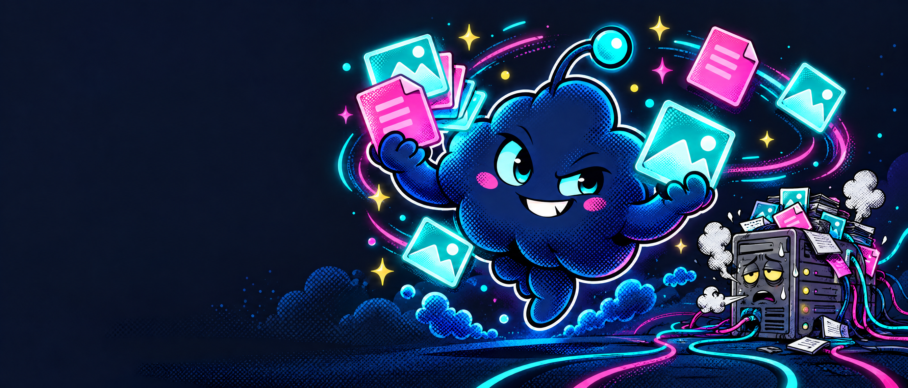
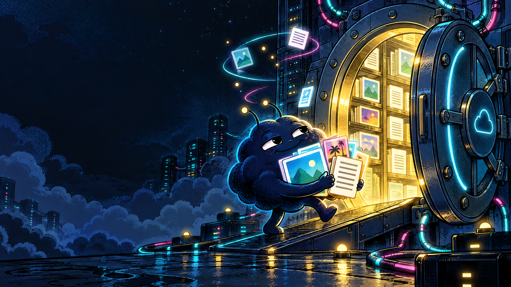
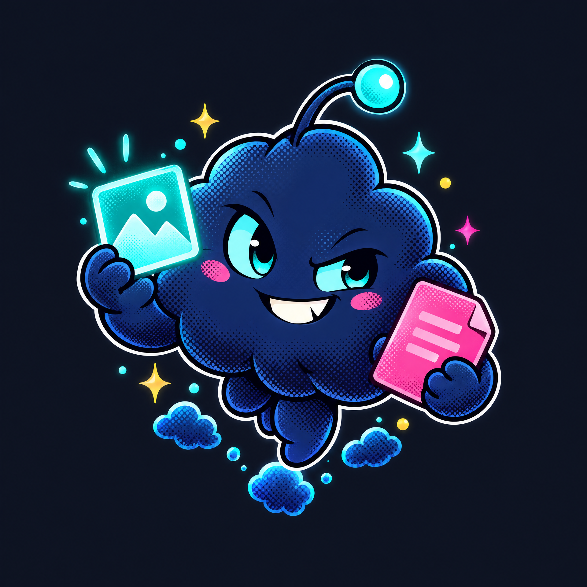
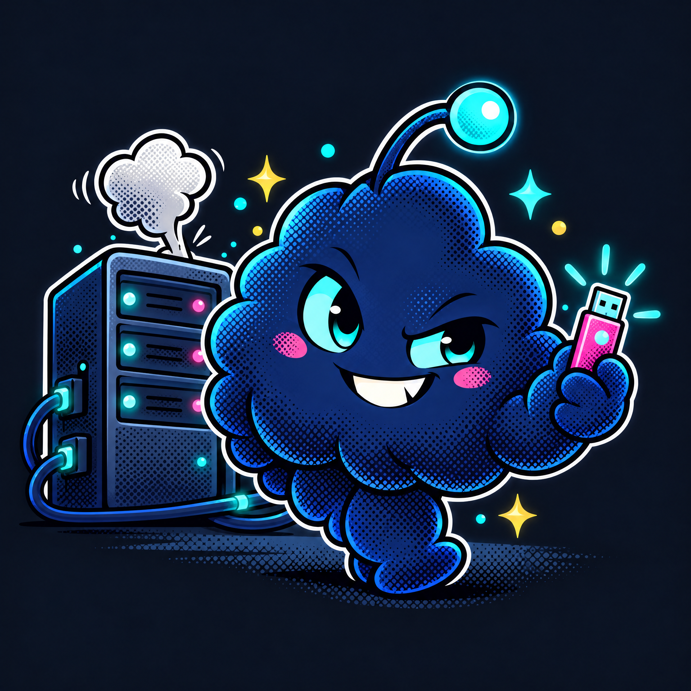
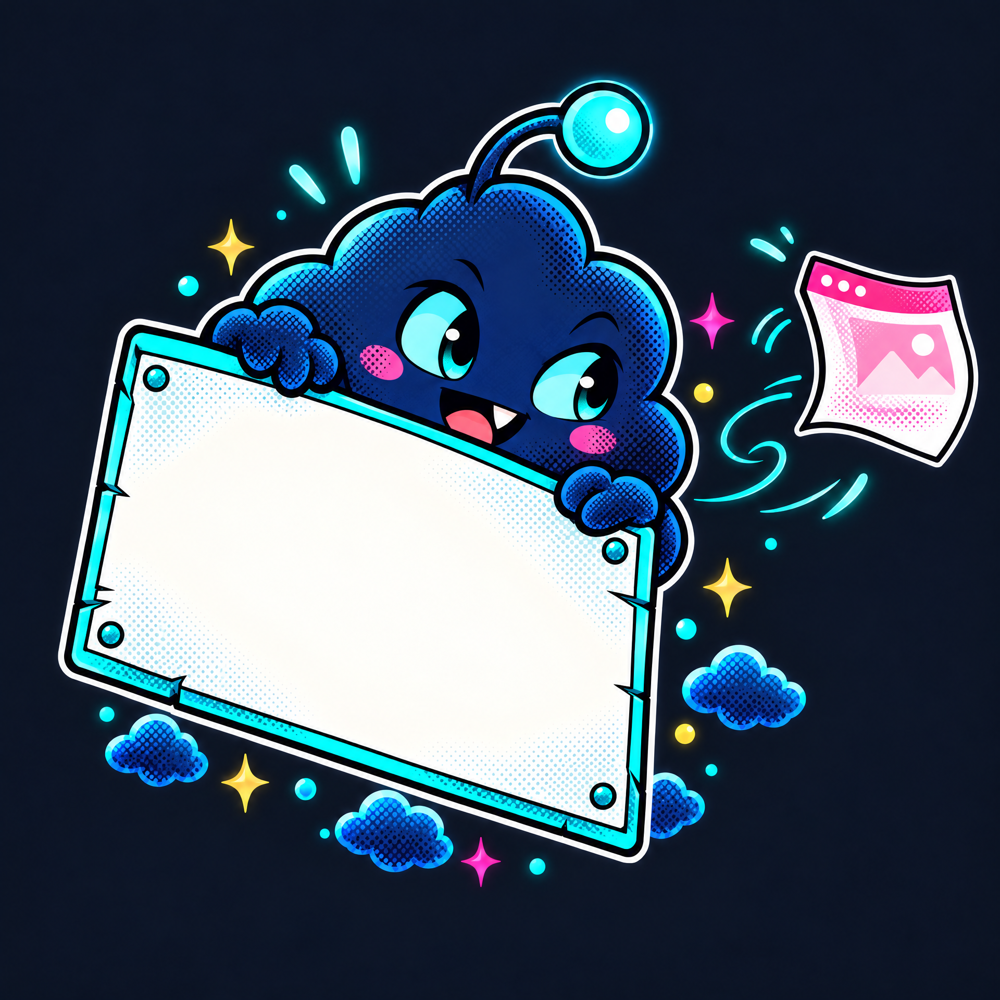

THE LITTLE CLOUD ART DEPARTMENT
Small mascot.
Big folder energy.
A mini gallery of original comic-style promo illustrations made for the Muse Hosting concept. Tap around the site—the mascot has opinions about backups.





ART IS NOT INFRASTRUCTURE